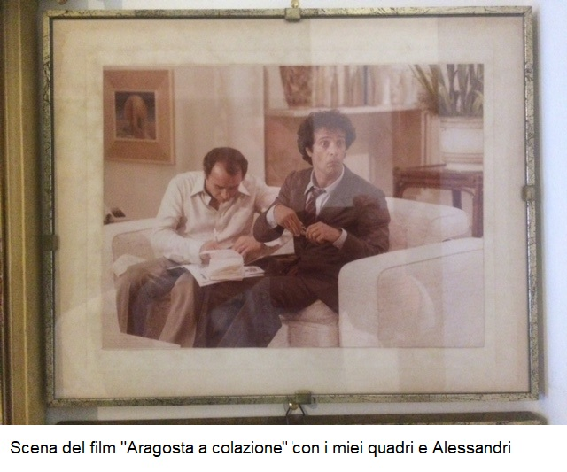

<div class="cv">
  <div class="container">
    <div class="cv-title">
      
      <h2 class="title">il mio cv</h2>
      
    </div>

    <div class="cv-content">
      <div class="cv-aside-content col-xs-12 col-md-5 col-xl-3">
        <aside class="cv-aside">
          
          <h3 class="cv-name col-md-12">Rino Lanzo</h3>
        </aside>
        <p class="cv-presentation">
          Nato a Sava (TA), il 11/06/1949, fin da giovane ha manifestato un
          interesse per l'arte, ha iniziato a dipingere come forma di
          espressione creativa. Dal 1974 è membro della Società Promotrice delle
          Belle Arti di Torino e ha partecipato ad altre associazioni culturali
          ed artistiche. Nel 1979, alcune delle sue opere sono state inserite
          nell'arredamento scenografico del film "Aragosta a colazione", con
          Enrico Montesano e Claude Brasseur. La sua produzione artistica si
          manifesta prevalentemente attraverso dipinti ad olio su basi
          preparate, acquerelli e tecniche materiche miste.
        </p>
      </div>

      <div class="col-xs-12 col-md-7 flex-grow-1 px-0 ps-md-4">
        <div class="cv-info">
          <div class="skill col-12">
            <h4 class="job-title">ARTEMISIA</h4>
            <p class="job-date">Novembre 1973</p>

            <p class="job-info">
              Dal novembre del 1973, mi unii con orgoglio all'Aderenza Culturale
              Artistica "ARTEMISIA", un illustre circolo culturale dell'epoca.
              L'affiliazione a questa rinomata associazione ha notevolmente
              arricchito il mio percorso artistico e ha giocato un ruolo
              significativo nella mia crescita nel mondo dell'arte.
            </p>
            <div class="photo">
              
            </div>
          </div>

          <div class="skill col-12">
            <h4 class="job-title">Società Promotrice delle Belle Arti</h4>
            <p class="job-date">Dal Gennaio 1974</p>

            <p class="job-info">
              Nel gennaio del 1974, ho avviato un coinvolgente percorso
              artistico iscrivendomi alla Società Promotrice delle Belle Arti di
              Torino. Da allora, ho avuto l'opportunità di esplorare la mia
              passione attraverso diverse mostre in Italia, presentando le mie
              opere e condividendo la mia visione artistica con il pubblico.
            </p>
            <div class="photo">
              
            </div>
          </div>

          <div class="skill col-12">
            <h4 class="job-title">
              Amicizia con Lorenzo Alessandri (e gruppo Surfata)
            </h4>
            <p class="job-date">1970-1980</p>

            <p class="job-info">
              Negli anni '70 e '80, ho avuto il privilegio di sviluppare
              un'importante amicizia con Lorenzo Alessandri di Giaveno (TO) (e
              gruppo Surfata). La nostra relazione è stata segnata da una
              profonda amicizia e reciproca stima artistica. Condividendo idee e
              confrontando frequentemente le nostre opere, ci siamo ispirati
              reciprocamente nel mondo dell'arte.
            </p>
          </div>

          <div class="skill col-12">
            <h4 class="job-title">Scena</h4>
            <p class="job-date">1979</p>

            <p class="job-info">
              Nel 1979, le mie opere furono scelte per impreziosire la
              scenografia del film "Un'aragosta a colazione", con la
              partecipazione di attori di spicco come Enrico Montesano e Claude
              Brasseur. Questo riconoscimento ha rappresentato per me un momento
              significativo come artista nel contesto cinematografico.
            </p>
            <div class="photo">
              
              
            </div>
          </div>

          <div class="skill col-12">
            <h4 class="job-title">AGENDA DEL COLLEZIONISTA - IL PAGURO</h4>
            <p class="job-date">1979</p>
            <p class="job-date">Scrive <strong>Giuseppe Fossati</strong></p>
            <p class="job-info">
              Salvator Lanzo sa essere pittore acceso, ricco di colori vivaci,
              rosso, giallo e azzurro soprattutto. In lui colpiscono i
              particolari, la ricercatezza con cui l'artista realizza i sassi, i
              ciottoli che quasi sempre compaiono ai piedi dei monumenti ideali
              o delle figure che riempiono le tele. Toni di grigio soffuso,
              quasi un chiaroscuro con una scelta di luce sempre indovinata. Per
              questo Salvator Lanzo non si può inquadrare in una corrente
              pittorica ben definita. In lui ci sono i tratti dell'artista
              legato ai canoni del figurativismo e quelli dei giovani più
              promettenti cresciuti alla scuola d'arte della nostra città
            </p>
            <div class="photo">
              
            </div>
          </div>

          <div class="skill col-12">
            <h4 class="job-title">AGENDA DEL COLLEZIONISTA - IL SERPENTE</h4>
            <p class="job-date">1986</p>
            <p class="job-date">Scrive <strong>Luigi Valerio</strong></p>
            <p class="job-info">
              Il fascino che promana dal messaggio artistico di Salvatore Lanzo
              è dovuto non solo alle indubbie qualità del discorso propriamente
              pittorico che si avvale di una tecnica raffinata e preziosa - ma
              anche al geniale rapporto fra la dimensione simbolica e quella
              surreale attraverso il quale l'artista esprime e comunica la
              propria visione e la propria concezione dell'uomo e del mondo.
            </p>
            <div class="photo">
              
            </div>
          </div>

          <div class="skill col-12">
            <h4 class="job-title">Altre Organizzazioni a cui ho preso parte</h4>
            <div class="photo">
              
              
            </div>
          </div>
        </div>
      </div>
    </div>
  </div>
</div>
